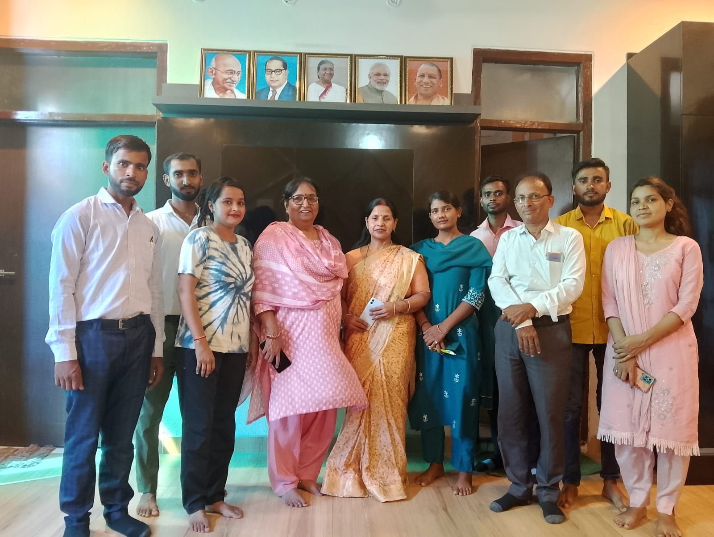

Our Mission | हमारा लक्ष्य
नशे से प्रभावित लोगों को सही उपचार, परामर्श और सकारात्मक माहौल देकर आत्मनिर्भर जीवन की ओर बढ़ाना।
Vats Welfare Foundation नशा मुक्ति, मानसिक मजबूती और सामाजिक पुनर्वास के लिए संवेदनशील सेवा प्रदान करता है।
हमारा उद्देश्य ऐसे लोगों को सुरक्षित सहयोग देना है जो नशे की समस्या से बाहर आकर अनुशासित और स्वस्थ जीवन जीना चाहते हैं। संस्था सेवा, विश्वास और जिम्मेदारी के साथ कार्य करती है।
नशे से प्रभावित लोगों को सही उपचार, परामर्श और सकारात्मक माहौल देकर आत्मनिर्भर जीवन की ओर बढ़ाना।
एक ऐसा समाज बनाना जहाँ हर व्यक्ति व्यसन से दूर, सम्मानपूर्ण और सुरक्षित जीवन जी सके।
हर व्यक्ति में सुधार की क्षमता होती है, बस उसे सही सहयोग और भरोसे की जरूरत होती है।
मरीजों की सुरक्षा, गोपनीयता और सम्मान को सर्वोपरि रखना, ताकि वे अपने सुधार के सफर में पूरी तरह से समर्थ महसूस करें।

मरीजों के साथ अपनापन और सम्मानपूर्ण व्यवहार।
सोच, आदत और दिनचर्या में स्थायी सुधार पर फोकस।
हर जानकारी को सुरक्षित और गोपनीय रखने की प्रतिबद्धता।
हर व्यक्ति के लिए स्पष्ट सुधार योजना और follow-up.
The trust of our patients and their families is our greatest strength. We maintain this trust through compassionate rehabilitation support, transparent processes, professional ethics, and continuous dedication towards recovery and wellness.
प्रशिक्षित और अनुभवी विशेषज्ञों द्वारा बेहतर और सुरक्षित उपचार की सुविधा।
शारीरिक, मानसिक और सामाजिक संतुलन के साथ संपूर्ण सुधार पर ध्यान केंद्रित।
हर मरीज की जानकारी गोपनीय रखी जाती है और उनके सम्मान को सर्वोपरि रखा जाता है।
हर व्यक्ति के लिए व्यक्तिगत योजना और निरंतर सहयोग द्वारा बेहतर भविष्य की ओर मार्गदर्शन।
“About us means serving every person with dignity, care and trust.”